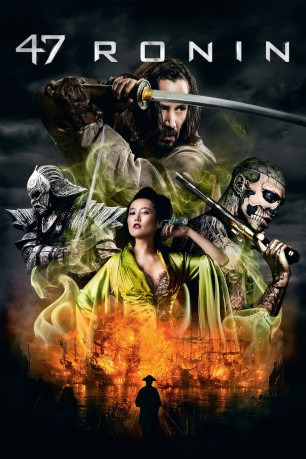

 
 IMDB-Wertung: 6.3 / 10
IMDB-Wertung: 6.3 / 10  Metascore:
Metascore: 
Als ihr Fürst heimtückisch ermordet wird, bleibt 47 entehrten Ronin (herrenlose Samurai) nur die Verbannung - deshalb wollen sie Rache. Der Krieger Oishi und seine Gefährten sind dabei auf die Unterstützung des Halbbluts Kai angewiesen, müssen ihn aber zunächst aus der Sklaverei befreien. Kai wurde einst vom Fürsten aufgenommen und erzogen und liebt seit langem die Tochter seines Herren. Obwohl die Ronin das Halbblut ihre Abneigung spüren lassen, schließt Kai sich ihrer Gruppe an und steigt schließlich sogar zum Anführer auf. Gemeinsam versuchen sie die Festung des Feindes zu stürmen und die Ehre ihres Fürsten wieder herzustellen. Doch auf dem Weg dorthin müssen sie sich gegen ihre Feinde, zu denen nicht nur Fabelwesen und eine verführerische Hexe zählen, wehren.
Jahr: 2013
Dauer: 128 Minuten
FSK: 12
Land: USA Studio: Universal PicturesTonspuren: DTS - ,
Untertitel:
Auflösung: 1080p (1920×1080) Größe: 6021 MB
Genre: Action, Abenteuer, Drama, Fantasy
Regisseur: Carl Rinsch
Drehbuch: Chris Morgan, Hossein Amini, Chris Morgan, Walter Hamada
Soundtrack: Ilan Eshkeri
Darsteller:
 Keanu Reeves als Kai
Keanu Reeves als Kai Hiroyuki Sanada als Ôishi
Hiroyuki Sanada als Ôishi Tadanobu Asano als Lord Kira
Tadanobu Asano als Lord Kira Masayoshi Haneda als Yasuno
Masayoshi Haneda als Yasuno Cary-Hiroyuki Tagawa als Shogun Tsunayoshi
Cary-Hiroyuki Tagawa als Shogun Tsunayoshi Rinko Kikuchi als Witch
Rinko Kikuchi als Witch Togo Igawa als Tengu Lord
Togo Igawa als Tengu Lord Yorick van Wageningen als Kapitan
Yorick van Wageningen als Kapitan Junichi Kajioka als Guard
Junichi Kajioka als Guard Clyde Kusatsu als Drunk Official
Clyde Kusatsu als Drunk Official Ron Bottitta als Narrator
Ron Bottitta als Narrator Jozef Aoki als Ronin , uncredited
Jozef Aoki als Ronin , uncredited Amed Hashimi als Ronin , uncredited
Amed Hashimi als Ronin , uncredited Max Scully als Cavalry , uncredited
Max Scully als Cavalry , uncredited Clem So als Ronin , uncredited
Clem So als Ronin , uncreditedDatei: X:\HD-Eastern-Classic(A-M)\47 Ronin (2013, FSK12, 1920x1080) 3D.mkv seit 02.02.2015
Festplatte: HD Eastern+Western
 Es gibt insgesamt 63 Filme in der Gruppe 'HD-Eastern-Classic(A-M)'
Es gibt insgesamt 63 Filme in der Gruppe 'HD-Eastern-Classic(A-M)'